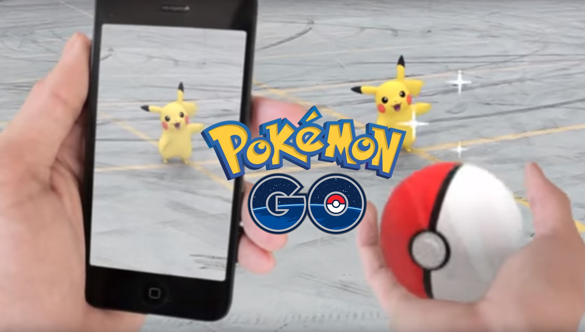
Pokemon GO...I want to be the very best!
A couple weeks ago Pokemon Go was released and it has be a hit. Everyone is excited about this application because it brings back childhood memories. With the application you can become a pokemon trainer! The application uses your phone's pgs and brings pokemon to you! You can train them and fight them!
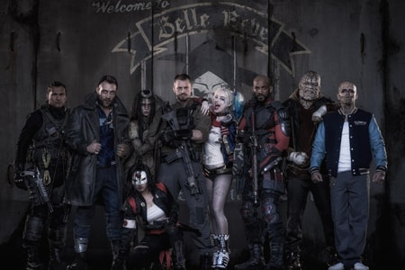
Suicide Squad living up to Expections??
With all these upcomming hero and villian movies coming up there are a lot of people doubting how good Suicide Squad is going to be. Batman VS Superman had so many mixed reviews. When the first images of the film came out many comic book fans did not like Jared Leto's look as the joker. Many have talked down on the movie but only you will be able to decide what you think of the movie when it comes out on August 5th.
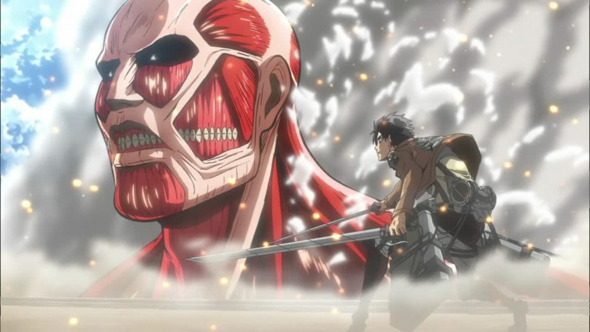
Eren...back with a Vengance
After almost three years, Attack on Titan is finally coming back in 2017. There have been rumors of the anime even coming back this year. The second season is going to follow the manga and there will possible be a fight between the rouge titan and the armored titan. With the long gap between season one and season two, many fans are excited about the anime coming back.
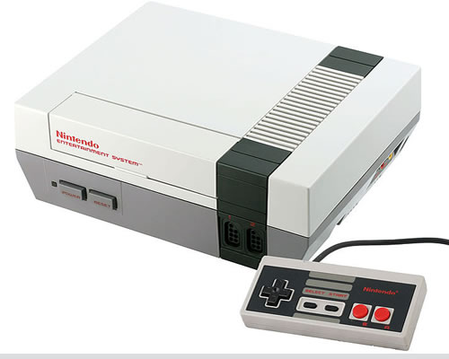
Bringing Nerdy Back!
Nintendo announced that they are going to bring back the NES game console, expect a mini version of it and with no carridges. The new version of the console come with 30 classic games preloaded.Some of the games that are included are going to be Mega Man 2, Donkey Kong, Legend of Zelda and many others.
attackONlevi
Vegas,Nevada
hipstERNIE
Portland, Oregon
MISTer Pokemon!
Los Angeles, California
Subription Boxes
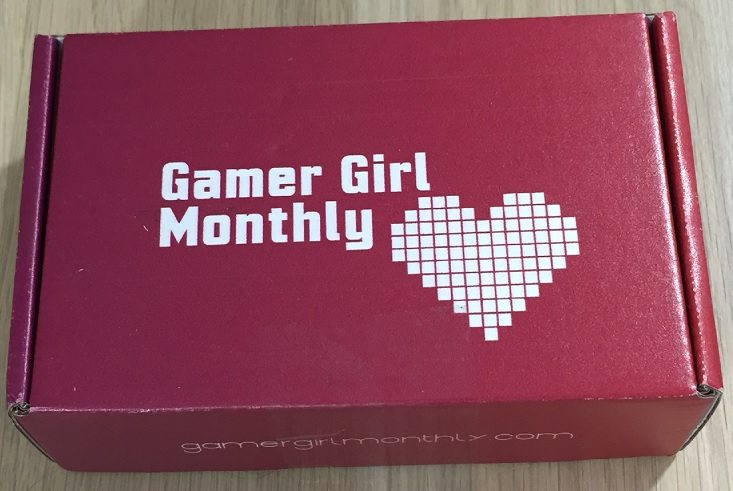
Gamer Girl Box Review
This box is a monthly subscription for a few dollars a month. It is packed with a bunch of geeky gadgets. Just like all the other nerdy boxes avaliable this one is just as awesome!
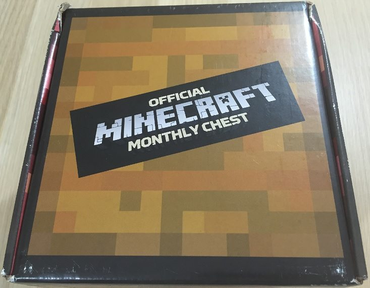
MineCraft Box
This box is the perfect gift for any minecraft over. Part of the fun with every Mine Chest is taking inventory of the themed chest contents. Hidden just below your Exclusive Minecraft T-shirt, you will uncover Minecraft Toys and Collectibles as well as Minecraft DIY Crafting Recipes PLUS Exclusive Minecraft items available only to Mine Chest subscribers first!
Movies
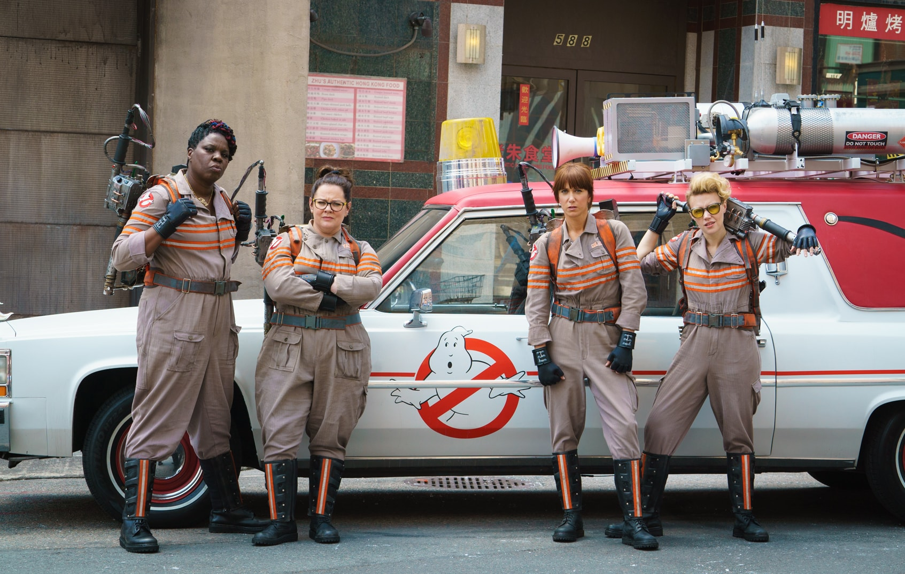
Ghostbusters
The new ghostbusters movie just came with the new cast.I think it is a good movie, maybe even a very good movie. At the very least, it is colorful and funny and spooky and populated by actors I like watching. It is certainly no disaster, despite what any wrongheaded internet campaigns are trying to tell you.
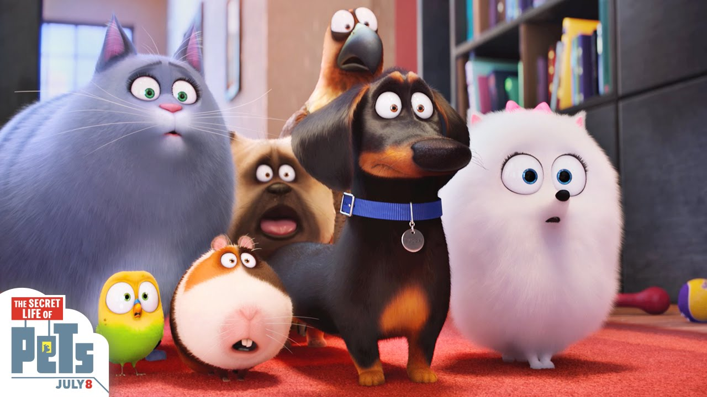
The Secert Life of Pets
The family friendly movie is great for all ages. It is funny and cute. Dogs and cats living together equals mass hysteria, and adding in lizards and pigs hijacking cars turns everyday situations entertainingly nutty in The Secret Life of Pets.
Video Games
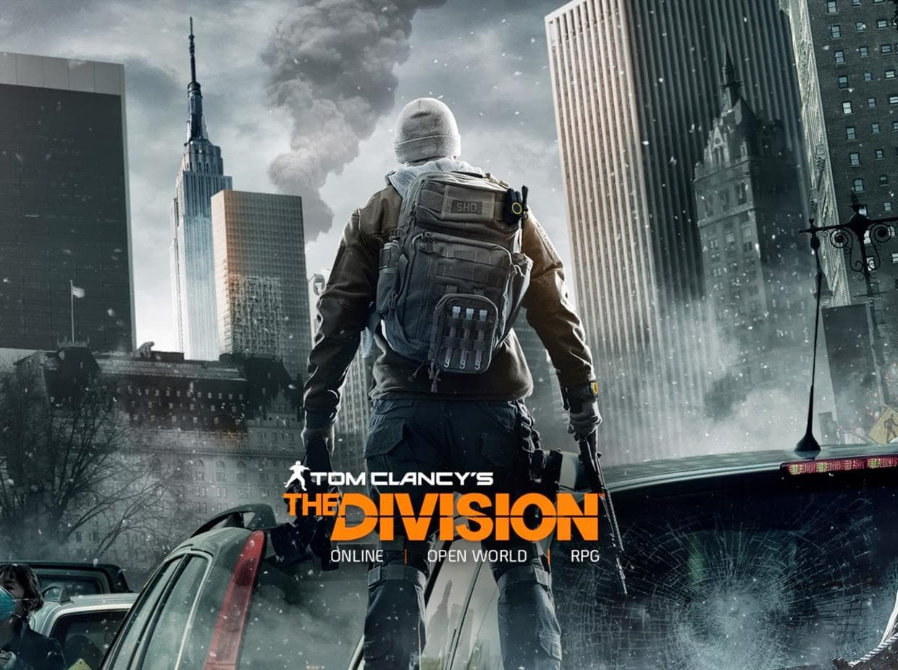
The Division
Both for better and for worse, The Division: Underground would probably be the best way to show a curious, uninitiated player the hazy mix of fun and tedium that typifies Ubisofts massive third-person shooter.
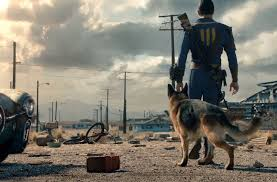
Fallout 4
Fallout 4: Contraptions Workshop is centered entirely around the Settlement-building portion of Fallout 4. But unlike Wasteland, the new creation toolbox is stuffed with instruments that are thoughtfully designed to interact with one another in ever more complex and intriguing ways, enticing our inquisitive and puzzle-minded sides with the challenge of creating ever-more-devious constructs.
Animes
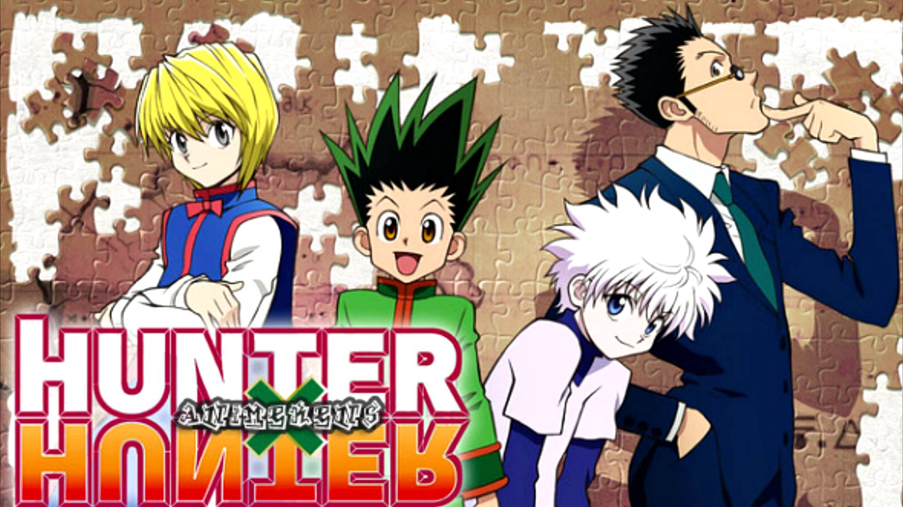
Hunter X Hunter
The first couple of episodes might seem kinda corny too some and yeah they are somewhat generic, but stick with it.This isn't some kids show, it's actually very mature and dark(just the right amount though)
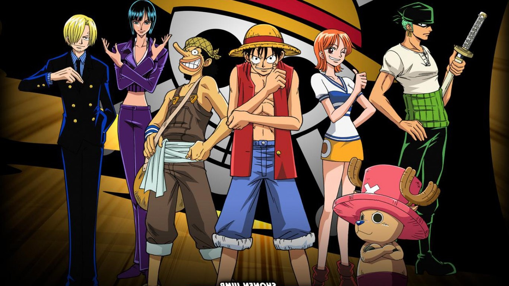
One Piece
There are two responses I get, without fail, every time I try to get someone new to watch this show. "I don't like the art style," or "I've seen the dub - NO THANKS." I'm guilty of both of these myself. But if there's one thing I need to stress before even getting started on this review, it's that the 4Kids dub is NOT One Piece.